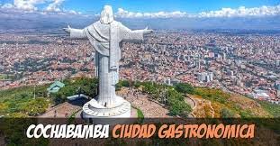
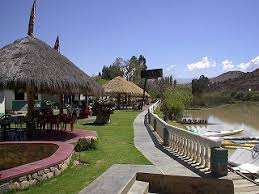

CRISTO DE LA CONCORDIA
Situado sobre el cerro San Pedro, El Cristo tiene el denominativo de la “Concordia”, significando el carácter integrador geográfico, político y social que tiene la ciudad y el departamento de Cochabamba, además de representar la hospitalidad del pueblo cochabambino. Para perpetuar el recuerdo de la visita del Papa Juan Pablo II y la enseñanza de paz, entendimiento y concordia impartida en esa ocasión por el Vicario de Cristo, a iniciativa del dirigente obrero fabril Lucio López, se acordó levantar en la cumbre del cerro de San Pedro, una monumental y bellísima obra escultora del Cristo de la Concordia proyectada y llevada a cabo por los afamados escultores y arquitectos cochabambinos, los hermanos Walter y Cesar Terrazas. El Cristo de la Concordia tiene una estructura de hormigón armado con un alto de 34,20 mts. y un ancho de 6,00 mts. Es considerado el monumento más alto de Latinoamérica. Esta gigantesca imagen de Jesús está de pie, con los brazos extendidos, representando la hospitalidad del pueblo cochabambino y la protección de Cristo sobre la ciudad de Cochabamba. Alrededor del Cristo se ha instalado un magnifico mirador, del mismo se puede divisar y admirar toda la cuidad y el valle que lo rodea, obteniendo una panorámica total. Complementando sus servicios, en los últimos años se ha dotado de un restaurante- snack y un sistema de iluminación intermitente, acciones que mejoran y complementan la calidad del atractivo.
LAGUNA DE LA ANGOSTURA
Se trata de una laguna artificial que originalmente fue construida como una represa para riegos y actualmente también es uno de los lugares turísticos en los que se puede disfrutar de piscina, paseos en bote por la laguna, y de la comida de la zona. A orillas de la laguna se encuentran varios restaurantes cuya especialidad es el pescado, además de las dulces y cálidas cabañas que ofrecen alojamiento y servicios para celebrar ocasiones especiales.